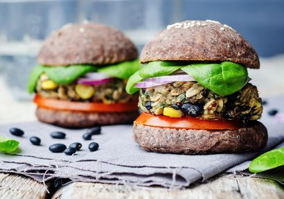

Descubre el poder de las proteínas vegetales con esta hamburguesa vegana. La quinoa y los frijoles negros se unen para crear una experiencia culinaria que satisface tanto a veganos como a carnívoros curiosos.
Ingredientes
- 1 taza de quinoa cocida
- 1 taza de frijoles negros cocidos y machacados
- 1/2 taza de pimiento rojo picado
- 1/4 de taza de cebolla picada
- 2 dientes de ajo picados
- 1/4 de taza de harina de avena
- 1 cucharadita de paprika
- Sal y pimienta al gusto
- Aceite de oliva
Instrucciones
- En un sartén a fuego medio, saltea el pimiento y la cebolla con un poco de aceite hasta que estén suaves. Añade el ajo y cocina por un minuto más.
- En un bol grande, combina la quinoa cocida con los frijoles negros machacados y la mezcla de pimiento y cebolla.
- Incorpora la harina de avena, paprika, sal y pimienta. Mezcla bien hasta formar una masa.
- Divide la mezcla en porciones y forma las hamburguesas con las manos.
- Calienta un poco de aceite en un sartén a fuego medio y cocina las hamburguesas por ambos lados hasta que estén doradas y firmes.
- Sirve en pan de hamburguesa con tus toppings veganos preferidos.